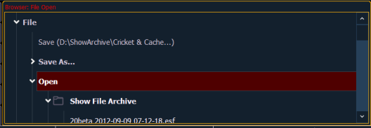
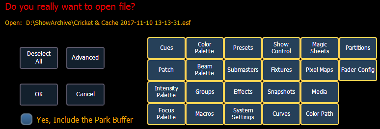

Names of show files may appear in the browser list in normal text or in bold text. Files in normal text indicate that there is only one show file stored by that name.
Bold show names indicate that there are several versions of the show file stored under that name, the bold one being the most recent. To access the most recent show file, simply select the bold name. You may right arrow [Page u] from the bold name to expand a list of previous versions beneath it in the browser. Select the desired show from the expanded list.
To open an existing Eos Family show file, navigate within the browser to: File> Open> and press [Select].

Element provides you with multiple locations to retrieve an Eos Family show file (.esf) including:
Select the specific show file
This will open the partial show loading screen in the CIA.

From this screen you can select which components of the show file you wish to load. The buttons at the center of the CIA represent all of the show components that you can choose to load. By default all components are selected (gray) and will be loaded. To withhold any show components from loading, simply deselect them in the CIA by touching the respective button.
To reselect all show components, press the {Reset} button and all buttons will return to gray (selected). To stop the show load process, press the {Cancel} button.
When you have selected/deselected all of the show components you require, press the {OK} button.
Element loads the selected show to the console.
CAUTION: On a partial show open, if any record targets are not opened, any existing data of that type will be cleared from the console.To merge show data, merge should be used. See Merging Show Files